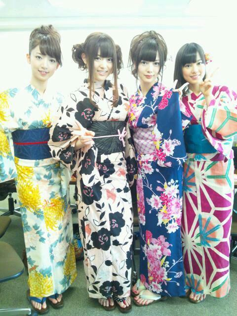

2012/0716Monりんご王国の王女っ(o・・o)
おつかれさまつむら〜っ(o・・o)/
さゆりんごやでな〜っ(o・・o)/
更新遅くなってすみません＞＜
おいでシャンプー発売記念全国握手会＠大阪
きてくださりありがとうございました〜(*^^*)！
なんと！
わたくし、松村沙友理は
さゆにゃんとＭＣを
つとめさしていただきました！
Ｗさゆり〜です(*^^*)！
めっちゃ緊張したけど
みなさんの優しさもお借りして
なんとかなったんじゃないかなと
思います！
あと、
狼に口笛をにもアンダーとして
出さしていただき
おいでシャンプー
狼に口笛を
ハウス！
乃木坂の詩
そして、走れ！bicycleの
５曲を披露させていただきました！
めっちゃ楽しかったです！
ＭＣもアンダーもやりたがり精神で
立候補したのですが
結果、でしゃばりすぎたかなと
ちと不安。
でもまぁ、楽しかったし
やってよかったー(*^^*)♪
ほほほ〜い♪
自己紹介では
松村のキャッチフレーズ
一緒にいってくださりありがとうございます！
あれ、ほんまに嬉しいです///
会場に来られなかった方も
気持ちは届いてますよー(*^^*)
ありがとうございます！
でもな！その後に
「さゆりんごぱーんち」ってやったら
すべった(・∀・)笑
会場の空気が凍りました。わぁお！
笑いに厳しい大阪では
さゆりんごぱんちは
ただのぱんちになってしまいました。
けど、さゆりんは負けない！
大阪でもさゆりんごぱんちが
受け入れられるように
私はやり続けるぞ！！
大阪のみなさん！
次は一緒にやろなっ！
さゆりんごぱーんちっ(o・・o)⊃
そんで、握手会！
地元！地元！じとも！！
おかえりんごって言われるのが嬉しい！
地元で全国から来てくださった方に会えるのが嬉しい！
ろってぃー的に言うと
わいわーいな感じですよ！
楽しかった〜(*^^*)♪
でもちゃんとした御返事が
出来なかった方すみません＞＜
またゆっくりお話しましょう♪
そして沢山の取材をうけてきました〜(*^^*)
もっと多くのかたに
乃木坂を知ってもらえたらええなぁ♪
帰りにはお祭り帰りであろう
浴衣姿のかたが
沢山いて...
お祭り行きたくなりました(T-T)
浴衣きて(T-T)
悲しいから今日の写真はこれだ！

前回のお姉さんチームと
いくちゃん♪
このままお祭りに行きたいー(;_;)笑
そういえば夏風邪をひいてしまったようです(T-T)
１日で箱ティッシュを２箱消費したぜっ(・ω＜)☆
全然エコじゃないぜっ(・ω＜)☆
地球さんごめんなさい。
近いうちに質問かえして
いきたいなーと思ってるので
良かったら質問してください！
前にしたけど、
松村が返せてないものも
もう一度質問してくださると
嬉しいです＞＜！
ちなみに松村の好きな野菜は
コーンです！
トマトも好き！
けどトマトジュースは苦手(T-T)
よく飲みますが...
けどスイカがありやったら
スイカＮＯ、１ですよ！
すいか〜(*^^*)
ほなら、またね〜っ(o・・o)/~
さゆりんごでしたっ(o・・o)/~
2012/07/16 21:30


コメント(546)
さゆりんごパンチをお願いします！
めっちゃ関西弁でしゃべってる関西人です(笑)
大阪握手会お疲れ様～！
最前でのライブめっちゃ楽しかったわぁ
コールも叫んだし、野次も全力でしたからね←(笑)
握手は謝らなあかんわゴメンな！
松村以外推しとか推し変するとか言ってもうて後からめっちゃ後悔してんねん
ちょっとやり過ぎた
きらちゃんはこれからもずっと松村単推しやから(￣∇￣)b
２ヶ月間寂しい泣
また手紙書くから読んでなー
風邪早く治しやー
ほなねﾉｼ
さゆりんって本当に日村さんきらいなの！？
乃木どこ？で大好きでーすっていってなかったけど、、、
Wさゆりは最強だと思う！！
体調大丈夫かな？？
お大事にね(´･_･`)
そのままお祭りに行っちゃいましょー
Wさゆり見にいきたかったです(´；ω；｀)
次に機会があれば絶対行きます！
おいっす～(o・・o)/~
乃木どこ(｀・ω´・)ｂグッ
HK3ホントオモシロイわ～
じゃあ質問で、この夏ビキニに挑戦するのは本当ですか？
では暑いですが頑張ってね(o・・o)/~
リンゴちゃんが頭いいと思うメンバーはだーーーれーーー？
土曜日は、ありがとう！めちゃめちゃ楽しかったです。さゆりんごに会えてまた生気が回復しました。笑
当分頑張れるよ！
風邪大丈夫？夏の風邪は、長引くから気をつけてね。早く治れ。
司会も新曲もよかったよ。さゆりんごパンチ、さゆりんごウィンクも三途の川見えたわ。
再来月が待ち遠しい。
さゆりんごに質問。
乃木坂に入って一番変化があったことは？
早く風邪治してね
それとも、乃木坂入ってからやり始めたんですか？
おつかれさま～♪
さゆりんきれい！！
なんでトマトが……
訳分からん┐( ￣ー￣)┌
質問！
自分は今浪人生活中なのですが、
さゆりんの英単語の覚え方を教えてください
まっつんからまっつんへ
大阪楽しかったなぁ
松村デーと言ってもいいくらいの活躍で行って良かったと思ったよ～
あ、そういえば、プレゼントしたものをちゃんと使ってくれてるのがわかったので嬉しい。涙出そうや。
より一層好きになってしまったー
PVも解禁になったね。
何度かアップで映るから嬉しいねん。
でも、ウィッグ姿がもうひとつわからんから、写真アップしてほしいなぁ。
走れ！Bicycleはほんまええ曲やって思う。
もう録画したやつ何度もリピートしてるし、歌詞がなんとなく切ない。
もっと多くの人に聴いてもらわないとね。
風邪は早く治るように祈っておくね。
ほんなら、またね！
東京より顔色良いなとは思ったけど、そうでもなかったんね(^-^;
一気に暑くなってきたし、ほんと、体調には気を付けてなぁ
ほんとのほんとのファイナルこそ、元気な状態で会いましょう。
じゃ、２週間頑張りんごっ(o・・o)
質問：今期のアニメは何見てますか？
北海道のミニ個別までもうちょっとだ
インテックスでは幕張以上の活躍だったみたいでお疲れ様(^^)
エコじゃないけど大丈夫かね？
鼻真っ赤になってるんじゃない？
休める時は休んでおくんなまし(^^ゞ
神宮の花火大会も出るみたいだね？
行けるように調節します(^^)v
／お疲れヽ
/ ・ ・ヽ
｜"ー―――"|
浴衣いいなぁ～
お祭り行きたい(〃'▽'〃)
大阪めっちゃ楽しかったで！
んでわかった事あんねん
俺やっぱりさゆがめっちゃ好きや～
さゆそぉとぉかゎぃぃよ！
これを聞いた時に恥ずかしくて笑った？
あの顔が忘れられへん＞＜
さゆまぢ天使♪
これからもさゆとの約束守って
3rdもいっぱい行くからなぁ～
さゆへの質問は全部握手の時に
聞くようにしてるから
他の人の質問にいっぱい答えてあげてぇ～
あぁ～そぉそぉ
１つだけ
もしよかったら
さゆのちょっと詳しい自己紹介とか
ブログのネタがない時でも
やってくれたら嬉しいなぁ♪
バレー部ではホントにキャプテンだったんですか？
想像が………？(￣∇+￣)
(｀・ω´・)ｂグッ
私、まだ生でさゆりんごぱんち見てないからいつか見られたらいいなっ(^o^)/
そして夏風邪大丈夫かい？今年の夏風邪は長くて人にうつりやすいらしいから気をつけて！私も１ヶ月くらいずっと咳してたから(>_<)お大事にー！
じゃあ、さゆりんごスーパートルネードギャラクシーパンチだったらいけるんじゃない？w
質問していーの？
じゃあ、質問するー(*･ω･)ﾉ
今、腕立てしよーか、背筋にしよーか迷ってんだよね(￣∇￣)ちなみに腹筋はさっきした(*･ω･)ﾉ
どっちからしたらいーと思う？？
さゆりーん♥
更新楽しみに待ってました！！
早速質問！
さゆりんの好きなディズニーキャラクター教えて！！
こんどプレゼント送っちゃうかも～♡♡
質?問！
スイカバーは好きですか？(゜▽゜)
お祭りいきたいなー
でも部活で行けない(泣)
浴衣かわいいなー(*^▽^)/★*☆♪
これから２ヶ月近く会えないね
多分サードの最初の握手会は行くからよろしくな～
質問は～
今回はないよー(^_^)笑
悔しいだろ～！
9/2まで我慢だあwww
司会も狼もすごく良かったですよ(*^o^*)
ぱんちはねぇ
面白くないとかじゃなくて
なんかタイミングがちょっとずれてたんかな(笑
わかれへんけど(笑
なんか溜めの一言を掛けてからぱんちしてもらったら良いかも(^_^)v
浴衣のさゆりん
可愛すぎる(*'▽'*)
今度、さゆりんごコール
やりたいなぁ(*^^*)
さゆりんに質問！！！
たけのこの里orきのこの山
どっちが好きですか？？
ちなみにうちは
たけのこの里派です！
答えてくれたら
嬉しいです(●´ω｀●)
風邪、ゆっくり治してね
大阪では、大活躍だったみたいだね！
色々経験できてよかったジャマイカ！
体には気をつけてね！
ではまた！
すべってもめげずに続けようとするさゆりん好きだわー
その姿勢好きだわー
俺もこの前風邪ひいて治りかけたけど、無理したらぶり返したよ
完全に治るまで気をつけてね
さゆりんはいつも明るいけど、落ち込むことってあるの？
バーン！
やっぱ
りんごとの握手楽しいわ！
まあひなちまには劣るけどな(笑)
さゆりんごではありません(笑)
さゆりんごパンチが効かないとかさすが関西ww
浴衣の4人かわいすぎます(^o^)v
特にいくちゃんが………
嘘嘘(笑)
さゆりんごしかああああ(￣▽￣;)
～質問～
さゆりんごをお姉ちゃんにしたいです!
私と年が5つ離れてるけどなってくれる？┐('～`;)┌
またコメントするね(^o^)
さゆりんご!!
俺がパワーを送るから
風邪早く治してね(^O^)
さゆりんごパンチ待ってるよ
ＷさゆりのＭＣよかったよ
それと僕的にはさゆりんごパンチ笑ってしまったんやけど…
ツボずれてる？
さゆりん、ずれてないよね？
まぁずれてても気にしない～
最後にさゆりんに質問しちゃいます
答えてくれたらうれしいです。
①好きなスポーツ(やってたスポーツ)
②得意科目
③趣味
④着てみたいコスプレ
もっと聞きたいことあるけど、我慢する。
その他は、次の握手会で直接聞きます
こんばんご!!
東京全握でも言ってたけどMCって立候補制なんでしょー。
さゆりんどんどん立候補してよ！
関西人だし上手く回せる！よね？笑
それにMC出来るようになった方が仕事の幅広がるぜよー☆
さゆりんごぱんちｗｗｗ
すべったとかｗｗｗ
今度から事故らないように俺が阻止するわｗｗｗ
今日お祭り行ったよ！
靖国神社のみたま祭りってやつに！
さゆりんより一足先に夏を感じてきました。
情緒あふれる境内で癒されまくった。
さゆりんもはやくお祭り行けるといいね！
あと神宮花火大会の出演も決定したジャン！
やったね～。やっぱりお仕事で花火きたじゃんー。
ライブも見に行こうと思ってます！
あわよくばまっちゅんの浴衣も拝めるカナ？
すごく聞きたい質問があってね！！！
新曲「走れ!bicycle」の略し方！！！
なんかハシバイとか自転車とかバイセコーとかチャリ走とか諸説あるわけですよ。ファンの間でも。
それを何とか統一してほしい！
俺はちなみに自転車派ｗｗ言い易いしｗｗ
さゆりんとかメンバーはなんて略してる？
教えて～。
ゆかゆかです(*^^*)
お仕事お疲れ様です！
じゃあ早速質問♡
さゆりんは朝起きるの苦手？
私は凄く苦手で夜型人間だから、朝型だったら朝起きれる方法を教えて欲しいな！
3rdのpv見たよー！さゆりんいっぱい映ってて嬉しいかぎりです( ^ ^ )/■
ほな9月の握手会楽しみにしてるね(*^^*)
ゆかゆか
でも、風邪は大丈夫かい!?夏風邪はしつこいからちゃんとお薬飲んで、ゆっくり休んで治してね～。
じゃあ、あっしからの質問～。前回の新技(さゆりんがあっしのほっぺを人差し指で指すという技)の時、なんていってたの～!?ちょう緊張しててなんも聞こえなかったもので・・・。
握手会＆ライブ＆ＭＣお疲れ様！
見に行きたかったー／(^o^)＼
りんご食べて風邪治さないとねｗ
お大事に！
お疲れさまー(^-^)/
さゆりんごパンチどんまい(笑)
次は滑らないよ、きっと(*^^*)笑
握手会本当に楽しかったです！
初めて聞いたさゆりんの声は少し初音ミクっぽい
不思議な声で一瞬で虜になりました！
握手会でさゆりんごぱんちやってもらってめっちゃうれしかった！！
次こそは前のブロックに入ってさゆりんに届くくらいパンチしたるで！！＝○
握手会途中で具合が悪そうだったね。
きっと5曲踊ってMCやって日頃の疲れもたまってたんだと思います。
体調の回復をお祈りしております。
ゆっくり休んでね！また大阪で会いましょう。
※質問※
さゆりんご投げキッスってお願いしたらやってくれますか？
大阪全握楽しかったよ(^o^)
まいまいのとこいってごめんね(笑)
さゆりんごパンチ２発もくらってしまったし
ちゃんと反省してるよ！
さゆりんの髪下ろしたの珍しいね
めっちゃ可愛かった(照)
↑全握で言うの忘れて思い出したやつね(笑)
じゃあ質問ね！
さゆりんは握手会で何て言われたい？
次行ったときこれ使うけん知りたい＼(^o^)／
可愛すぎて可愛すぎて、逆にもう見れないかもしれないと
思うと悲しくなる勢いで可愛いよ！
今宵はゆっくり休んで体調回復に努めて下さい。
ヾ(^▽^)ノ
全握お疲れりんご～！
いや～、さゆりんとさゆにゃんのＷさゆりでＭＣなんて、見れた人が羨まし過ぎやろ～！
ってか、目立ちたがりはアイドルにとって大切な要素なんじゃね？
だってアイドルは目立ってナンボだべ？
(o^-')b
で、夏風邪とか大丈夫か？
箱ティッシュ２箱使うとかヤバくね？
とりあえずブログ更新しないで良いから、薬飲んで早よ寝なさい！
とか言いつつ質問をしてみる(笑)
さゆりんは正座して寝るのは知ってるけど(笑)、さゆりんの寝間着はどんなん着てんのかな？
良かったら教えてね！
ちなみに俺はＴシャツにロンパンで寝てるよ！
それと俺、トマトはダメ！絶対！(泣)
スイカは大好き！
野菜No.1は間違い無くスイカでキマリ！
(o^-')b
じゃ、今日も１日お疲れちゃんね！
またね！
(^.^)/~~~
とうもろこしなら家でも作ってるよ。
さゆりんに食べてもらいたいわ～ぁ。
さゆりんは浴衣でお祭り行ったら何したい？
二人ともMCすごい上手やったよ！
握手も楽しかったし！
また3rdの大阪の個別行くから
よろしくね(・∨<)キラン
夏風邪お大事に…!
浴衣可愛いね♪
まずは2ndシングルイベントお疲れ様でした(*･ω･)*_ _))
並行して3rdの準備やらプロモーションやら・・
毎日お疲れ様です(*･ω･)*_ _))（何回ペコリする自分w
私はイベント等参加できませんがこっそり応援してます＾＾
あ、CDはもちろん購入しますよって～w
最後に厚かましいけど質問を1つ。
Q:「乃木どこ？」でやってみたいorもう1度やりたい企画とかありますか？
コメントする